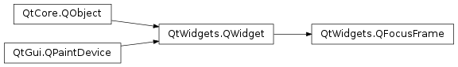

QFocusFrame¶
Synopsis¶
Functions¶
- def
initStyleOption(option) - def
setWidget(widget) - def
widget()
Detailed Description¶
The
PySide2.QtWidgets.QFocusFramewidget provides a focus frame which can be outside of a widget’s normal paintable area.Normally an application will not need to create its own
PySide2.QtWidgets.QFocusFrameasPySide2.QtWidgets.QStylewill handle this detail for you. A style writer can optionally use aPySide2.QtWidgets.QFocusFrameto have a focus area outside of the widget’s paintable geometry. In this way space need not be reserved for the widget to have focus but only set on aPySide2.QtWidgets.QWidgetwithQFocusFrame.setWidget. It is, however, legal to create your ownPySide2.QtWidgets.QFocusFrameon a custom widget and set its geometry manually viaQWidget.setGeometryhowever you will not get auto-placement when the focused widget changes size or placement.
-
class
PySide2.QtWidgets.QFocusFrame([parent=nullptr])¶ Parameters: parent – PySide2.QtWidgets.QWidgetConstructs a
PySide2.QtWidgets.QFocusFrame.The focus frame will not monitor
parentfor updates but rather can be placed manually or by usingQFocusFrame.setWidget. APySide2.QtWidgets.QFocusFramesetsQt.WA_NoChildEventsForParentattribute; as a result the parent will not receive aQEvent.ChildAddedevent, this will make it possible to manually set the geometry of thePySide2.QtWidgets.QFocusFrameinside of aPySide2.QtWidgets.QSplitteror other child event monitoring widget.See also
-
PySide2.QtWidgets.QFocusFrame.initStyleOption(option)¶ Parameters: option – PySide2.QtWidgets.QStyleOptionInitialize
optionwith the values from thisPySide2.QtWidgets.QFocusFrame. This method is useful for subclasses when they need aPySide2.QtWidgets.QStyleOption, but don’t want to fill in all the information themselves.See also
-
PySide2.QtWidgets.QFocusFrame.setWidget(widget)¶ Parameters: widget – PySide2.QtWidgets.QWidgetPySide2.QtWidgets.QFocusFramewill track changes towidgetand resize itself automatically. If the monitored widget’s parent changes,PySide2.QtWidgets.QFocusFramewill follow the widget and place itself around the widget automatically. If the monitored widget is deleted,PySide2.QtWidgets.QFocusFramewill set it to zero.See also
-
PySide2.QtWidgets.QFocusFrame.widget()¶ Return type: PySide2.QtWidgets.QWidgetReturns the currently monitored widget for automatically resize and update.
See also
© 2018 The Qt Company Ltd. Documentation contributions included herein are the copyrights of their respective owners. The documentation provided herein is licensed under the terms of the GNU Free Documentation License version 1.3 as published by the Free Software Foundation. Qt and respective logos are trademarks of The Qt Company Ltd. in Finland and/or other countries worldwide. All other trademarks are property of their respective owners.